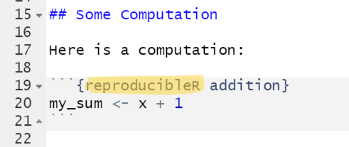
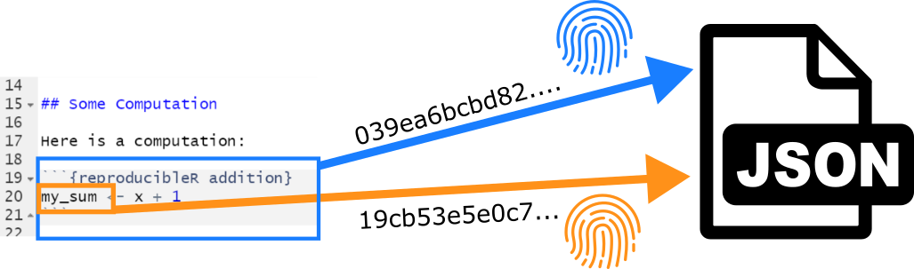
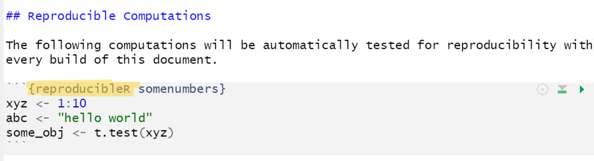

Also read our Open Access publication about this package in Collabra: Psychology: Automated Reproducibility Testing in R Markdown
Why should I care?
This package allows you to make computational results in R testable for reproduction (does the same script with the same data produce the same results, e.g. on a different computer and/or later in time). There is only a single thing you need to change in your analysis if you are already using RMarkdown: Load the package at the beginning of your R Markdown file (library(reproducibleRchunks)) and change the code chunk type from r to reproducibleR. It’s that easy:

Installation
To install the package from CRAN, enter:
install.packages("reproducibleRchunks")Or, install the latest developers’ version:
devtools::install_github("brandmaier/reproducibleRchunks")Demo
You can try it out yourself—additional examples are available on our GitHub project page. Simply install the package and render the test.Rmd file to evaluate the reproducibility of its R code chunks. Each chunk will generate a reproducibility report. One chunk is intentionally designed to fail, showcasing how the package handles errors. Here’s what to expect:


Mechanics
The package executes reproducibleR code chunks as regular R code and gathers information about all variables that are newly declared in a given chunk. The contents of those variables are stored in a separate JSON data file (which is labeled according to the name of original Markdown file and the chunk label preceded by the prefix .repro and ending with the suffix .json). Once the document is regenerated and a corresponding JSON data files exist, their content is checked against the newly computed chunk variables for identity.

It is possible to either store the contents as fingerprints (default) or as plain content. Here is an example of how the contents of two objects are stored in plain format. In this example, there is a single variable called numbers with a vector of five numbers [0.874094, -1.6943659, -0.8961591, 1.00840087, 1.61713635] (rounded to a specified precision):
{json} { "type": "list", "attributes": { "names": { "type": "character", "attributes": {}, "value": ["numbers"] } }, "value": [ { "type": "double", "attributes": {}, "value": [0.874094, -1.6943659, -0.8961591, 1.00840087, 1.61713635] } ] }
For privacy reasons (and to save disk space), we actually do not store the raw data by default but only fingerprints of the data, which do not allow to reproduce the original data.
What kind of variables can be tested for reproducibility?
Virtually any kind of variable can be subjected to a reproducibility test by defining it within a reproducibleR code chunk in a R Markdown document, no matter whether it is a numeric result, a character string, or a more complex object such as the result from a call to t.test() (or any other statistical model):

Chunk Options
The package uses the standard rendering facilities of the knitr package and thus supports all standard code chunk options known from R Markdown documents, such as: - echo: show or hide the R code in the output - eval: evaluate the R code - include: FALSE hides both the code and the output - message: Show or hide messages - warning: Show or hide warnings - error: Show or hide errors
Further typical chunk options control output and formatting options (e.g., fig.width or fig.height).
Notes
Do not store critical and/or large data as raw data in reproducibleR chunks. In particular, do not store raw data (too large and possible breach of data protection laws, privacy issues), passwords (security risk as they would be stored in clear text), etc. Do not subject results from current date or current time functions as they are supposed to change over replications. Make sure to use random seeds if your analysis is based on random numbers and note that results from the default random number generator may vary between R versions.